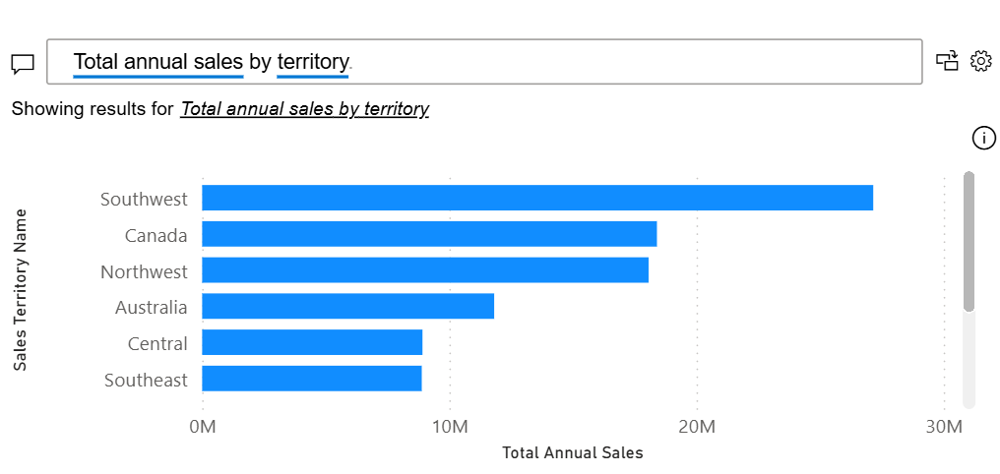
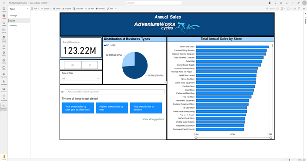
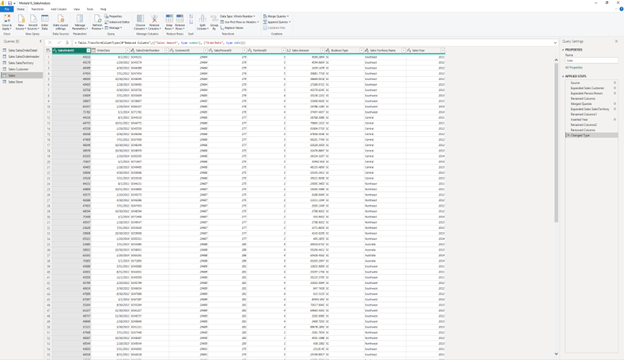
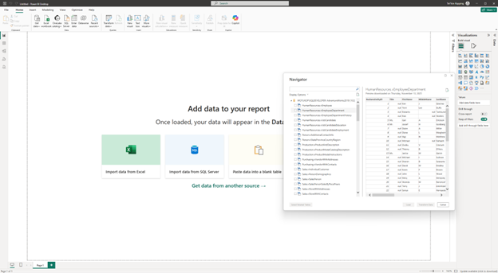

This course builds on what was learned in BI Data 1 – Paginated by exploring dynamic, real-time data. In this course, we dived into Power BI Desktop and Power BI Service. I was taught how to build interactive dashboards to allow users to discover insights through filtering, natural language queries, and advanced data modeling. BI Data 2 – Interactive focuses on connecting sources, using Power Query to clean and organize data for accuracy, and implementing Row-Level Security (RLS) before deploying reports for collaboration.
Utilizing Power BI Q&A to allow users to ask questions and receive insights.

Exploring data platforms including Databricks, Oracle, and Snowflake, alongside leading visual analytics tools like Tableau, Sisense, and Looker.
Identifying business user roles and terminology to ensure reports are fully interpretable, while applying report enhancements to drive user engagement.
Developed comprehensive interactive dashboards and successfully published them to the Power BI Service for public viewing.

Made transformations, including parsing, joining, renaming, and reordering columns within Power Query to optimize the data model.

Established a direct connection to an SQL database within Power BI to select tables that will be used to meet reporting requirements.

← Return to Academics